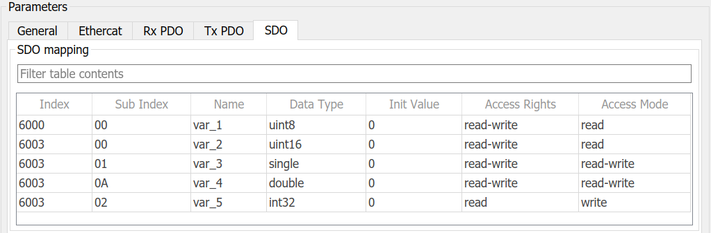

IO750 - Setup v2
IO750 - Setup v2 — Configure the IO750 I/O module
Description
The Setup block configures the protocol stack of the related I/O module and enables the Send and Receive blocks to exchange data on the network.
Parameters
- Module ID
The Module ID has two functions:
It logically connects the Setup block and its I/O blocks
It also informs the auto-search feature of the PCI Slot parameter. If only one I/O module of this family is installed, the Module ID must be set to 1. To see how each I/O module maps to a Module ID, use this Speedgoat API:
speedgoat.getIoInterfaces("TargetName", "mySpeedgoat")
This Setup block belongs to two families of I/O modules that use the same hardware for multiple protocols. Across both families, the Module ID must be unique.
IO64X/IO75X (single-node modules): IO641, IO642, IO643, IO644, IO750, IO751, IO752, IO753, IO754, IO755, IO756, IO758
IO64X-32/IO75X-32 (multi-node modules): IO642-32, IO752-32, IO754-32, IO756-32
If the PCI Slot parameter is set to -1 (auto-search), the Module ID must be in the range 1:n, where 'n' cannot be larger than the number of modules of this type installed in the target machine. Not all installed I/O modules need to be used.
To use this Setup block with a multi-node I/O module (IO75X-32 family), the Module ID must be defined as a two-element vector. The second vector element is the sub-module ID. It describes the specific node (1:32) within the I/O module. The 32 nodes are internally connected to form two linear networks (daisy-chain), where the first and the last node of both chains are externally accessible. If one node is not configured (has no Setup block), the chain terminates at this point. The sub-module IDs must therefore start at node 1, 16, 17 or 32 and not have any gaps.
![[Note]](images/note.png)
Note When using I/O modules of both families simultaneously (single-node and multi-node I/O modules), always use explicit addressing in the PCI Slot parameter. Ignore the Module IDs returned by the getIoInterfaces function and instead assign unique Module IDs accross all modules used.
- PCI Slot (-1: auto-search)
There are two approaches for mapping this block to a specific I/O module installed in your target machine. All modules of the same type must be configured using the same method.
Auto-Search: with the default value -1 the I/O module will be automatically located in the target machine. If you have multiple modules of the same kind, the Module ID defines which module is associated with this block. To see how each I/O module maps to a Module ID, use this Speedgoat API:
speedgoat.getIoInterfaces("TargetName", "mySpeedgoat")Explicit Addressing: to explicitly define the logical address of the I/O module in the target machine, you can provide the PCI bus and slot numbers as a vector: [bus, slot]. To determine these numbers, run the following command in the MATLAB command window:
speedgoat.getIoInterfaces("TargetName", "mySpeedgoat", "Advanced", true)Note that the PCI address can change whenever an I/O module is added or removed – usually, auto-search is the best option.
- Bus Start
Automatic: The device starts the communication immediately after the initialization of the real-time application on the target. The communication is maintained even if the real-time application stops.
Application controlled: After initialization of the real-time application on the target, the communication of the subordinate device with the network is off. The device starts the communication immediately after the real-time application has been started. The device stops the communication on the network when the real-time application stops.
- DC Synchronous Mode
This parameter lets you synchonize your model or parts of it to incoming EtherCAT PDO frames. If checked, you must place the related IO750 Send and Receive blocks in a function-call subsystem connected to an Interrupt Setup block. Refer to the Utilities documentation for more information on this block.
In the Interrupt Setup block, please select the same Module ID as in the IO750 Setup block. Do not forget to activate Distributed Clocks in your EtherCAT main device configuration and be aware of the DC timings you adjust there.
- Vendor Name
The name of the vendor of the emulated EtherCAT device. If you do not want to emulate a real device then leave the default value 'Hilscher'. You will find the specified vendor name in node <EtherCATInfo><Vendor><Name> of the exported ESI file.
- Group Name
The name of the ESI device group which the emulated EtherCAT device belongs to. If you do not want to emulate a real device then leave the default value 'netX'. You will find the specified group name in node <EtherCATInfo><Descriptions><Groups><Group><Name> of the exported ESI file.
- Type Name
The name of the emulated EtherCAT device. If you do not want to emulate a real device then leave the default value 'netX'. You will find the specified type name in node <EtherCATInfo><Descriptions><Groups><Group><Type> of the exported ESI file.
- Vendor ID
The ID of the vendor of the emulated EtherCAT device. If you do not want to emulate a real device then leave the default value (0xE0000044). After the real-time application has been started the vendor ID can be read by the EtherCAT main device at SDO 0x1018 subindex 1. It is also part of the SII. You will find the specified vendor ID value in node <EtherCATInfo><Vendor><Id> of the exported ESI file.
- Product Code
The product code of the emulated EtherCAT device. If you do not want to emulate a real device then leave the default value (0x00000001). After the real-time application has been started the product code can be read by the EtherCAT main device at SDO 0x1018 subindex 2. It is also part of the SII. You will find the specified product code value in node <EtherCATInfo><Descriptions><Devices><Device> <ProductCode> of the exported ESI file.
- Revision Number
The revision number of the emulated EtherCAT device. If you do not want to emulate a real device then leave the default value (0x00020004). After the real-time application has been started the revision number can be read by the EtherCAT main device at SDO 0x1018 subindex 3. It is also part of the SII. You will find the specified product code value in node <EtherCATInfo><Descriptions><Devices><Device> <RevisionNo> of the exported ESI file.
- Serial Number
The serial number of the emulated EtherCAT device. If you do not want to emulate a real device then leave the default value (0x00000000). After the real-time application has been started the serial number can be read by the EtherCAT main device at SDO 0x1018 subindex 4. It is also part of the SII.
- Station Address Alias
The explicit node address of the subordinate device in the EtherCAT network. Normally, EtherCAT main devices automatically increment and assign subordinate device addresses depending on the position of the subordinate device in the EtherCAT network. Besides, main devices can activate explicit addressing. In this mode, the main device reads the address alias from the subordinate device's EEPROM to identify the device in the network. Refer to the main device configuration manual to learn how to enable this addressing mode.
The value must range between 0 and 65535. The value must be unique in the EtherCAT network. If 0, no alias will be written to the EEPROM.
- Device Identification Value
A unique identification value that allows the EtherCAT main device to clearly identify the subordinate device in the EtherCAT network. During startup, the EtherCAT main device reads the value from the subordinate device's EEPROM and compares it with the related identifier in the main device's IO configuration. This check is optional. Please refer to the main device configuration manual for more information.
The value must range between 0 and 65535. If 0, no identification value will be written to the EEPROM.
- Export ESI
Creates an EtherCAT Slave Information (ESI) file according to the identification parameters and PDO configuration. You usually copy the file to C:\TwinCAT\3.1\Config\Io\EtherCAT to use it in TwinCAT.
- RxPDO Mapping
This table defines the process data objects the subordinate device receives from the main device. They can be read using the IO750 Receive block. One PDO consists of one to multiple application objects (=signals). Use the buttons to add, move or delete rows. Depending on the table content, a CoE object dictionary will be created during the initialization of the real-time application on the target. The main device can read that dictionary in order to check the PDO configuration. The RxPDO sync manager is always at object 0x1C12. It manages PDO mapping objects starting at 0x1600 which are linked to application objects starting at 0x2000.
The length of one PDO must be a multiple of one byte. Since you can define boolean signals, the Setup block always fills a bitstream to become a full byte. You cannot see those padding bits in the PDO table but you have to consider them when valuing the total byte length of your process data image. Bits will be inserted in the following cases:
A signal of a non-boolean data type comes right after a bitstream which is shorter than 8 bits
A new PDO comes right after a bitstream which is shorter than 8 bits
- TxPDO Mapping
This table defines the process data objects the subordinate device sends to the main device. They can be written using the IO750 Send block. One PDO consists of one to multiple application objects (=signals). Use the buttons to add, move or delete rows. Depending on the table content, a CoE object dictionary will be created during the initialization of the real-time application on the target. The main device can read that dictionary in order to check the PDO configuration. The TxPDO sync manager is always at object 0x1C13. It manages PDO mapping objects starting at 0x1A00 which are linked to application objects starting at 0x3000.
Byte padding is handle as described in RxPDO mapping.
- SDO Mapping
This table defines the service data objects of the subordinate device. Use the buttons to add, move or delete rows. Depending on the table content, a CoE object dictionary will be created during the initialization of the real-time application on the target. The main device can read and write that dictionary via the EtherCAT protocol. On the Simulink side, use the SDO Read and Write blocks to read and write the values of the objects in the dictionary.
An object can either be a simple variable (called VAR in the EtherCAT specification) or a root object with sub-objects (called RECORD in the EtherCAT specification). One row of the SDO table is either an object or a sub-object.

SDO PropertiesEnter the Index of the (sub-) object. The Index must have 4 digits in hexadecimal format without any leading or trailing format identifiers. Sub-objects with the same Index belong to the same object. Valid values are between 0x0000 and 0xFFFF
Enter the Sub-Index of the (sub-) object. The Sub-Index must have two digits in hexadecimal format without any leading or trailing format identifiers'. A Sub-Index of 0 determines a row to be an object. A Sub-Index greater than 0 determines a row to be a sub-object. Valid values are between 0x00 and 0xFF
If only Sub-Index = 0 exists for a given Index this object will become a simple variable (VAR).
If there are additional Sub-Indices then the row with Sub-Index = 0 will become the root object (RECORD). In this case the properties Data Type, Init Value, Access Rights and Access Mode will not be recognized.
Enter the Name of the (sub-) object. The Name can also be read by the main device over EtherCAT
Enter the Data Type of the (sub-) object. Only fundamental types are supported even though more data types are defined in the EtherCAT specification
The Access Rights determines the permission for an EtherCAT main device when accessing the (sub-) object.
The Access Mode determines how to access the (sub-) object from the real-time application side
Select none to define the (sub-) object in the dictionary without reading and writing during runtime
Select read to read the value of a (sub-) object which has been written by the EtherCAT main device. The related output port will then be automatically added
Select write to write the value of a (sub-) object which the EtherCAT main device can then read. The related input port will then be automatically added
Select read-write to read and write. The SDO Read and the SDO Write blocks will then automatically get one more port each
![[Caution]](images/caution.png) | Caution |
|---|---|
Please consider the following limitations:
|